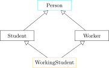

Definition
A generalization relates a superclass to one or more subclasses (hollow triangle on the superclass). Every instance of a subclass is an instance of the superclass: .
- Inheritance principle: every property (attribute, operation, association) of the superclass is a property of the subclass, and is not repeated in the diagram.
- Disjoint
{disjoint}: the subclasses share no instance. - Complete
{complete}: the union of the subclasses is the whole superclass. - One superclass can have several independent generalizations, one per criterion (occupation: student/worker; role: doctor/patient).
- Multiple inheritance: two non-disjoint subclasses can share instances only through an explicit common subclass (
WorkingStudent), so that every object keeps one most specific class. - Specialization: a subclass can restrict an inherited attribute (
Age: 0..120in Person,Age: 70..120in Elder).
Derivation
From "every Book has a Title" and "every HistoricalBook is a Book" it follows that every HistoricalBook has a Title. Inheritance is the transitivity of inclusion: if and every element of has the property, so does  .
.
Picture

A non-disjoint generalization and the common subclass that holds the shared instances.
Intuition
"is-a" must be true of every instance, forever. A square is-a rectangle in geometry, but not in a program where rectangles can be stretched.
Pitfall
Use generalization for classification, not for reuse of code: a Stack is not-a List even if it can be built from one (see substitutability).